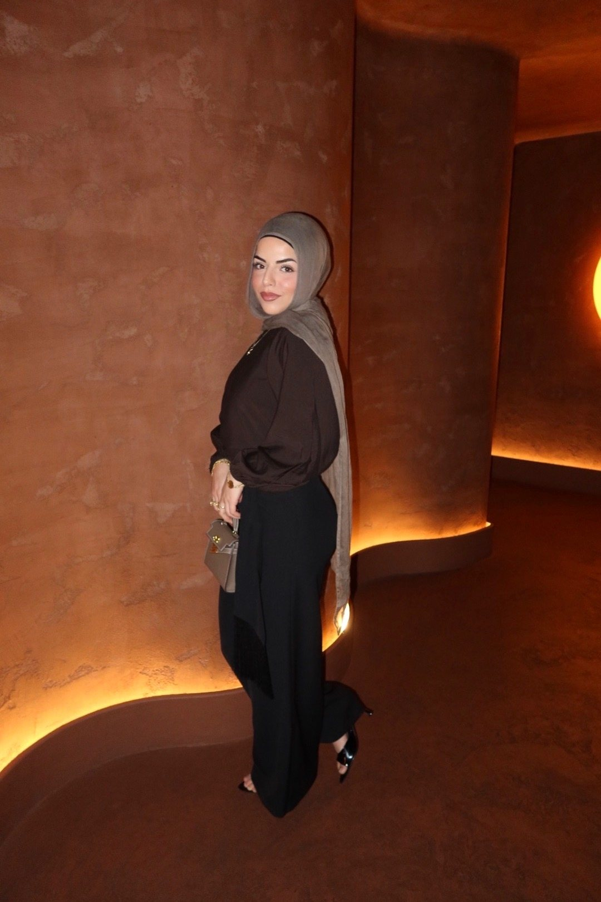
Issue No. 1Letter No. VISpring 2026
RawanCover Story02
Cover Story
Designer, founder of Fardos Designs, and the reason this magazine exists. Six looks, all hers.
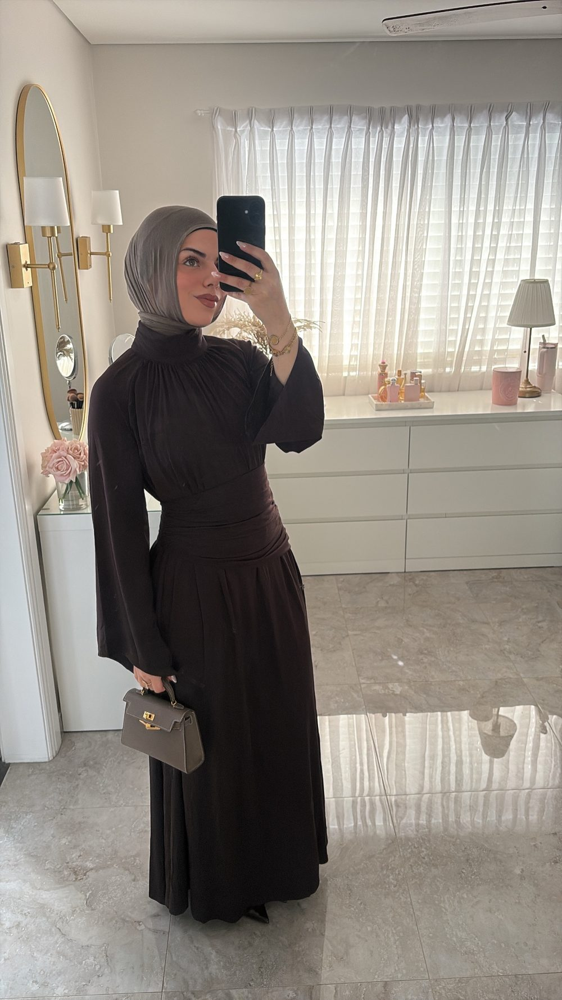
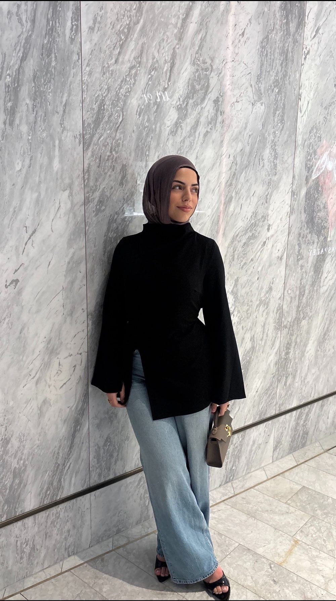
RawanCover Story03
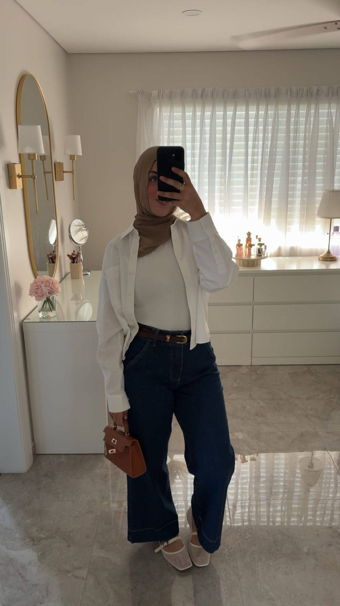
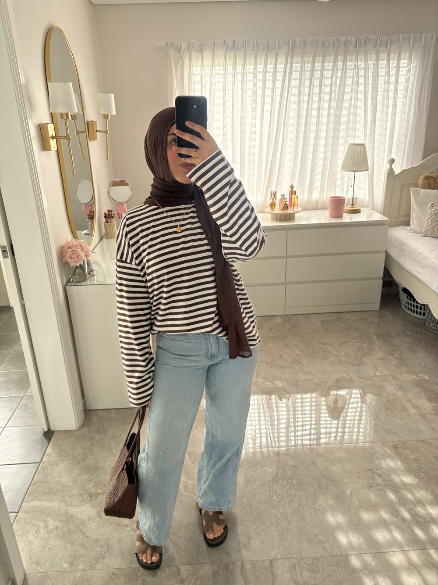
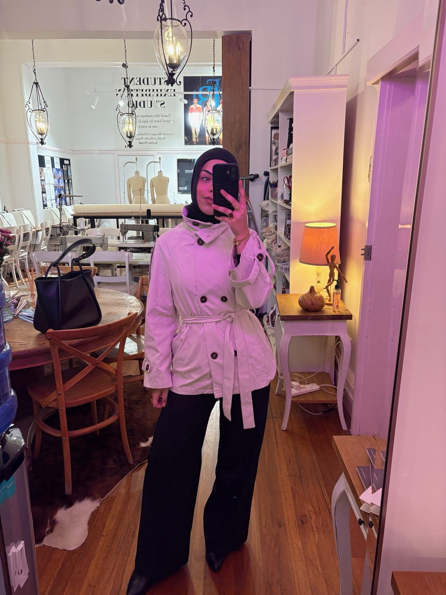
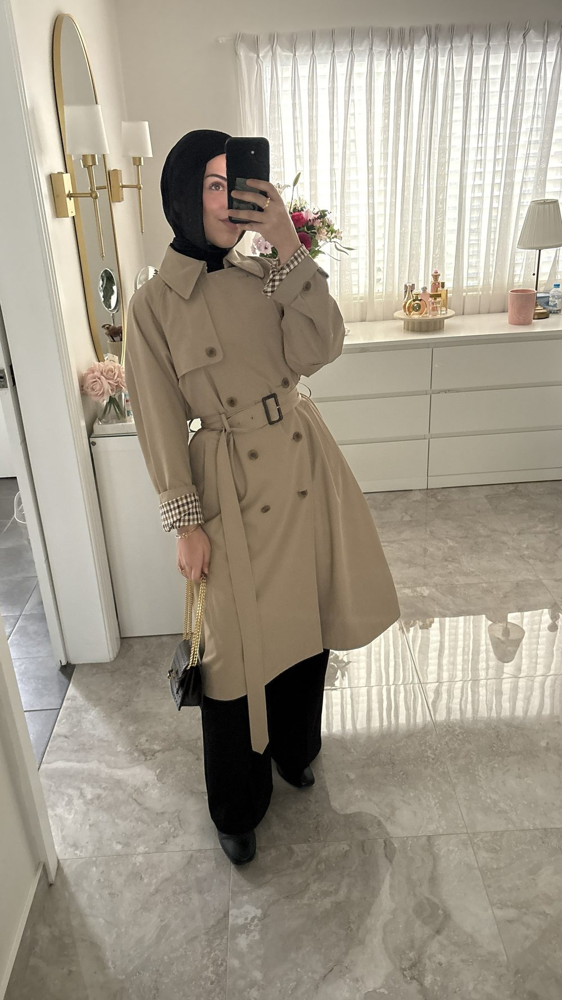
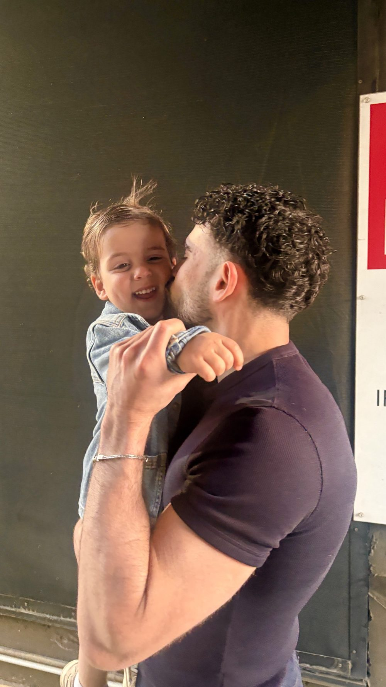
RawanThe Edit04
The Edit
There’s only one thing Ali loves, and she’s on the cover.
On Aliplum tee, silver bracelet, his own curls
RawanThe Edit05
This Season’s Picks
Trends come and go, Rawan. I’ve loved you through every one of them, and I’m not changing my look.
FardosFront RowSeat A1
where you’ll find me, every show
RawanThe Shoot06
The Shoot
Shot on location among the bookshelves, in matching browns. No stylist, no script — just the two of us.
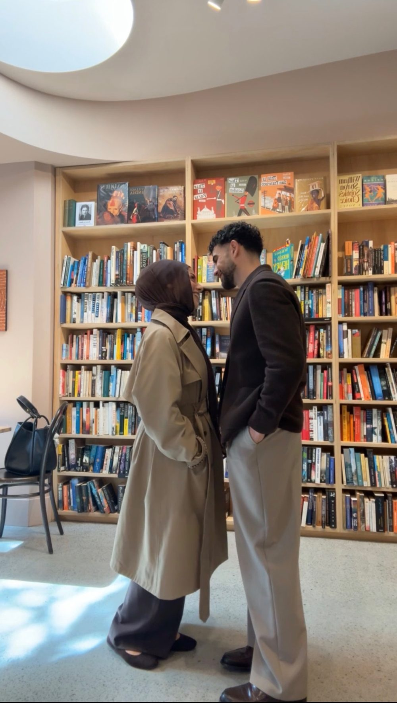
RawanThe Shoot07
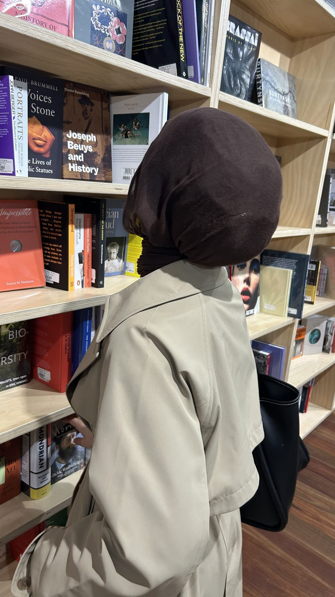
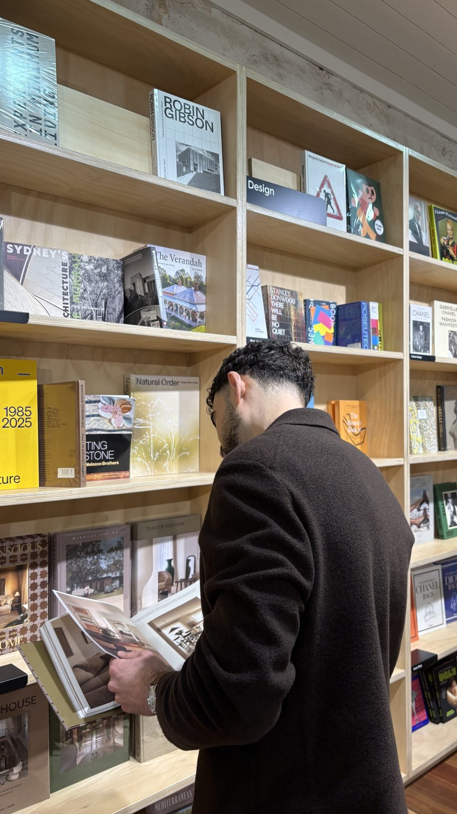
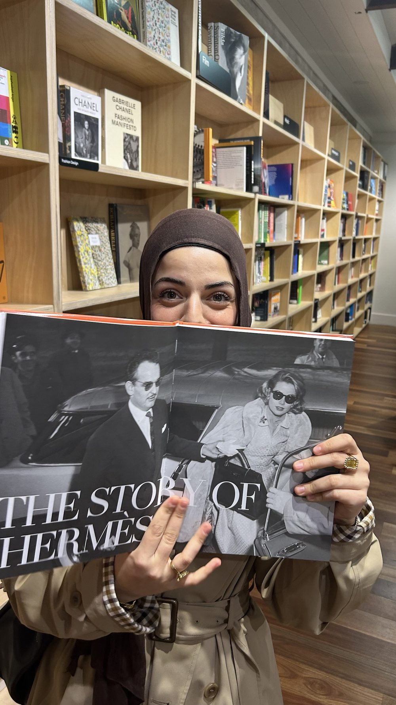
RawanThe Label08
She doesn’t follow trends. They follow her home.
a source close to the cover star (it was Ali)
FARDOS
فردوس
Designs · by Rawan
100% her
Hold often
Never leave out in the cold
Do not tumble dry
Fardos means paradise — which explains a lot.